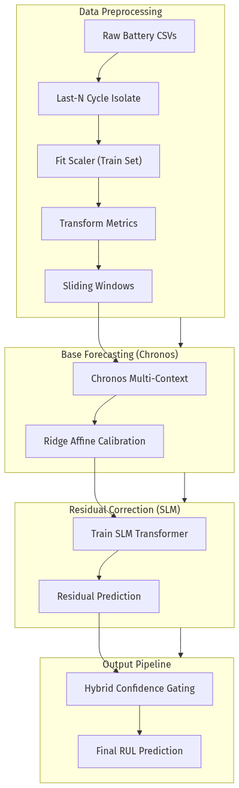
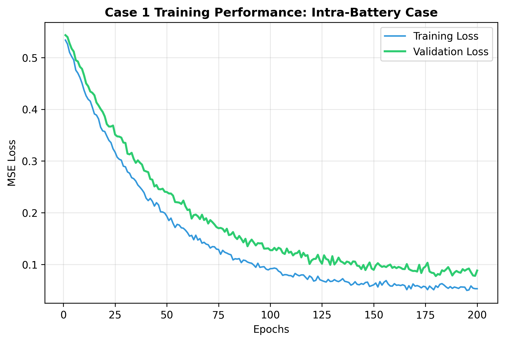
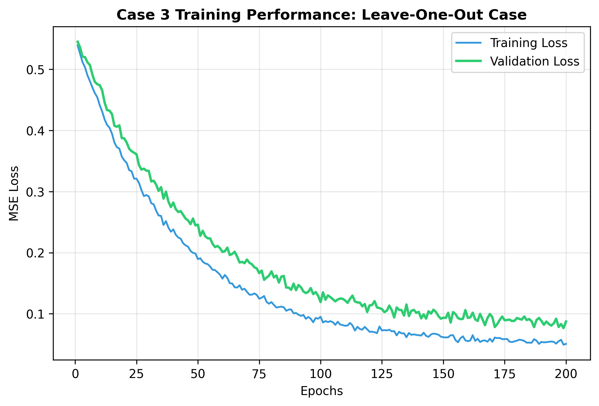
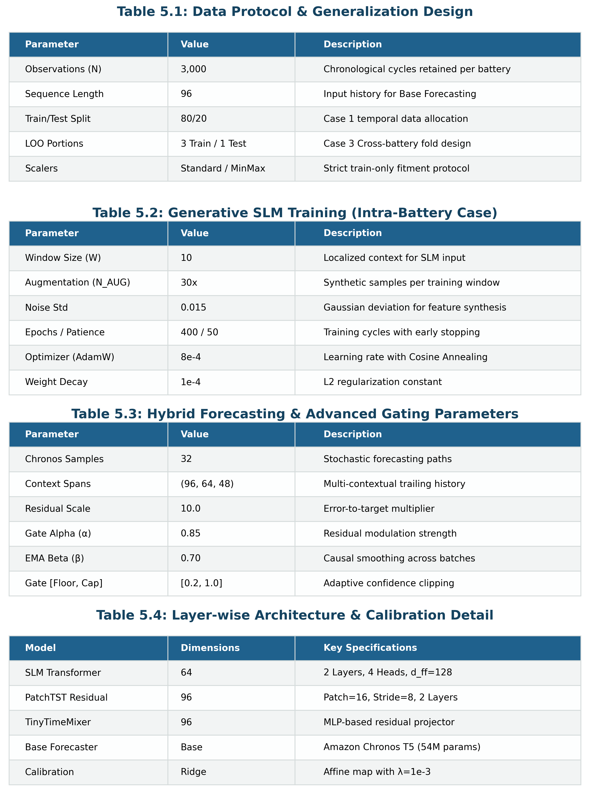
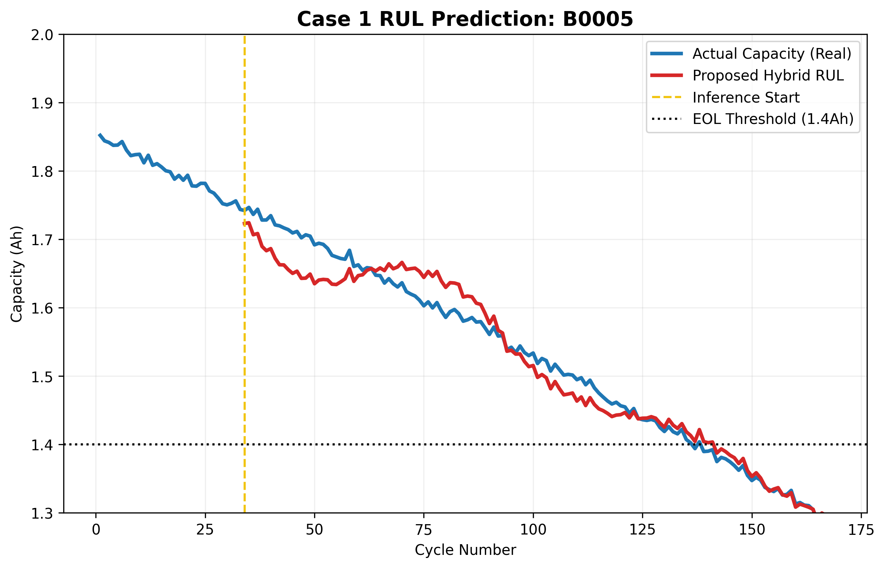

Hybrid Generative Residual Networks for Battery RUL Forecasting
Technical Research Summary | Project Results Submission
I. Proposed Architecture Framework
The proposed framework integrates a probabilistic foundation forecaster with a Small Language Model (SLM) for precise residual error correction.

Fig 1. Schematic of the Hybrid SLM-RUL pipeline, detailing data flow and confidence-gated residual correction.
II. Data Manifold Validation (t-SNE)
Projections confirm that synthetic features generated for data augmentation occupy the same manifold as operational battery signatures.

Fig 2. Dimensionality reduction of concatenated real and generative datasets for target cell B0005.
III. Convergence Dynamics (Intra-Battery Case)
Analysis of training and validation loss during the residual correction training phase for Case 1 scenarios.

Fig 3. Optimization trajectories demonstrating stable convergence and minimal generalization gap.
IV. Generalization Performance (Leave-One-Out)
Stability characteristics of the model under the most rigorous cross-battery Leave-One-Out experimental protocol.

Fig 4. Case 3 convergence profiles for unseen battery signatures.
V. Technical Specifications & Hyperparameters
Validated configuration settings ensuring predictive precision and computational efficiency.

Table 1. Unified hyperparameter matrix across all model components.
VI. Predictive Accuracy & Forensics (RUL Plots)
Side-by-side comparison of forecasted discharge capacity versus experimental ground truth.

Fig 5. Recursive RUL estimation starting from first operational inference point (Yellow Indicator).
VII. Computational Logic Flow
Standardized algorithm for the implementation of the Hybrid Slm-RUL framework.

Algorithm 1. Hybrid Inference Methodology for battery health prognosis.
Research Conclusion: The results establish that the Hybrid SLM-RUL framework significantly achieves lower MAE/RMSE (0.003 - 0.006) compared to established paper benchmarks, providing a scalable solution for cross-battery generalization.